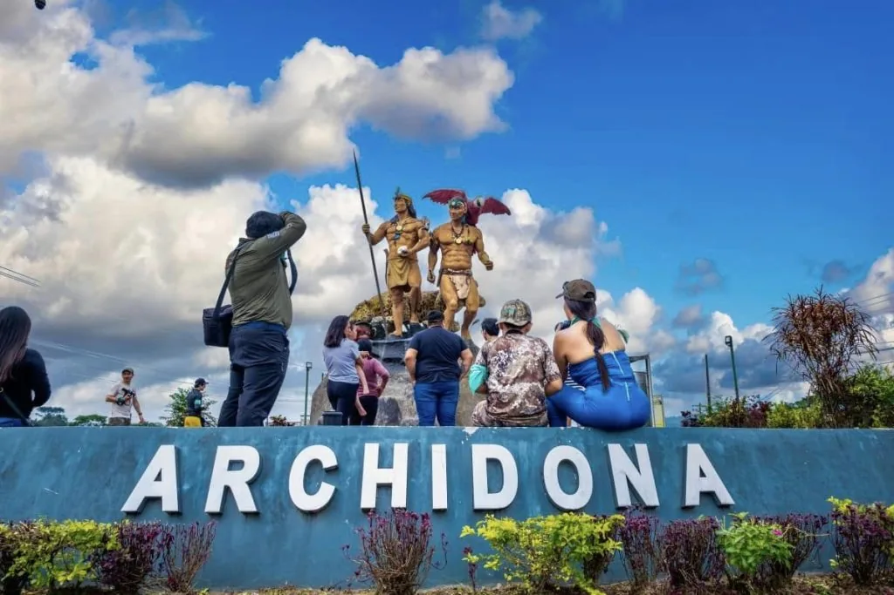
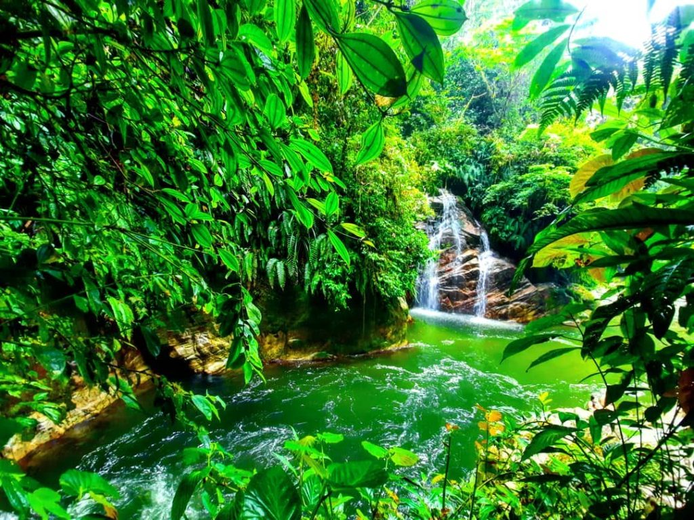

A 5 minutos
Cavernas de Jumandy
Un recorrido subterráneo entre formaciones rocosas, agua y memoria ancestral.

Naturaleza · Cultura · Aventura
Ríos, cavernas, comunidades y paisajes inolvidables, con Archidona como punto de partida.
Descubrir lugaresCerca del hotel
Tiempos aproximados desde Archidona. Nuestro equipo puede orientarte con información para organizar cada salida.
Un recorrido subterráneo entre formaciones rocosas, agua y memoria ancestral.
La capital de Napo: gastronomía, vida local y acceso a nuevas rutas amazónicas.

Naturaleza y agua cristalina para desconectarse del ritmo cotidiano.

Playa de río, selva y una de las puertas clásicas a la Amazonía ecuatoriana.

Pozas naturales y senderos para disfrutar una jornada de agua y bosque.

Consulta en recepción por recomendaciones de acuerdo con el clima y tu tiempo disponible.